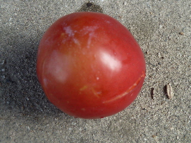
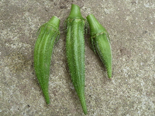
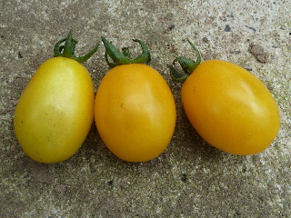
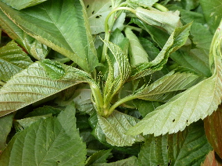
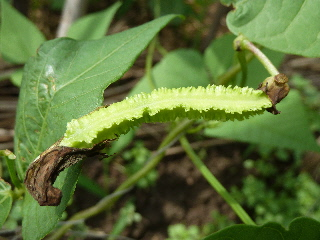
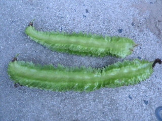
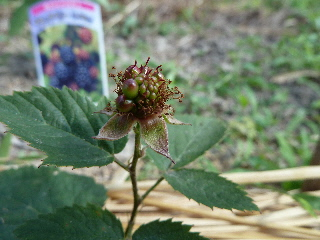
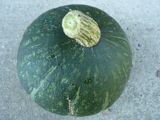

遊びで植物を育てよう
2012/07/01
スモモの収穫をしました。
今年初めてスモモを収穫しました。

まだ色が薄いですが、これくらいでとらないと虫に食べられてしまいます。
【7月TOP】
【日記TOP】
【園芸TOP】
2012/07/08
オクラの収穫。
オクラが収穫できました。

まだ最初なので、3つしかありません。
少ないので、どうやって食べるか迷いますね。
【7月TOP】
【日記TOP】
【園芸TOP】
2012/07/08
黄色いミニトマト収穫。
ミニトマトの中で私はこれが一番好きです。

黄色いトマトです。
トマト味が濃くていいです。
【7月TOP】
【日記TOP】
【園芸TOP】
2012/07/15
モロヘイヤを収穫しました。
モロヘイヤを収穫しました。

まだ丈が小さいですが、きっとドンドン成長すると思うので、多めに刈り取りました。
置いておくとすぐにしおれるので、すぐに料理します。
【7月TOP】
【日記TOP】
【園芸TOP】
2012/07/15
ブルーベリーを少し収穫しました。
ブルーベリーが一部いい色になったので、収穫しました。

今年のブルーベリーはいつもより量が多い気がする。
実も大きい気がする。
木が成長したのかな。
【7月TOP】
【日記TOP】
【園芸TOP】
2012/07/15
シカク豆がもうちょっとで食べれそうです。
小さなシカク豆が出来ていました。

もうちょっと大きくなったら食べれますね。
今年初めて植えて作ったので、食べるのが楽しみです。
【7月TOP】
【日記TOP】
【園芸TOP】
2012/07/25
シカク豆収穫しました。
巨大になったシカク豆を収穫しました。

大きさは20センチくらいです。
今回は2つ採りました。今のところ、一気に大量には取れないみたいです。
【7月TOP】
【日記TOP】
【園芸TOP】
2012/07/29
ブラックベリーの実らしきものがありました。
今年植えたばっかりのブラックベリーに実が出来ていました。

でもなんか格好悪いですね。
植えた時は5センチくらいの小さい苗だったので、今年実がつくとは思っていませんでした。
この実から種を採って植えたら育つかな？
【7月TOP】
【日記TOP】
【園芸TOP】
2012/07/29
スイカが採れ始めました。
スイカを2つ収獲しました。

まだまだ畑に小さいのがあるので、しばらくの間食べれそうです。
【7月TOP】
【日記TOP】
【園芸TOP】
2012/07/29
カボチャ収穫。
固くてしっかりしたカボチャが取れました。

美味しいといいな。ホクホクで甘いのを期待します。
【7月TOP】
【日記TOP】
【園芸TOP】
過去の日記
【2024年7月の日記】
【2023年7月の日記】
【2022年7月の日記】
【2021年7月の日記】
【2020年7月の日記】
【2019年7月の日記】
【2018年7月の日記】
【2017年7月の日記】
【2016年7月の日記】
【2015年7月の日記】
【2014年7月の日記】
【2013年7月の日記】
【2012年7月の日記】
【7月TOP】
【日記TOP】
【園芸TOP】
熱中症に注意しましょう。
【おいしいものを食べよう。】【しっかり寝よう。】
【ソロ活をしよう!】【季節感のあることをしよう。】【動画視聴はほどほどに。】【当サイトの全てのコンテンツは無断転載禁止です。】